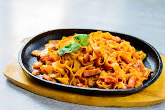

Simple Garlic Pasta

Ingredients
- 200g Pasta
- 2 tablespoons Olive Oil
- 3 cloves Garlic, chopped
- Salt and Pepper to taste
Instructions
- Boil water in a pot and add the pasta. Cook until soft.
- In a pan, heat the olive oil and add the chopped garlic.
- Drain the pasta and add it to the pan with the garlic.
- Add salt and pepper, mix well, and serve hot!